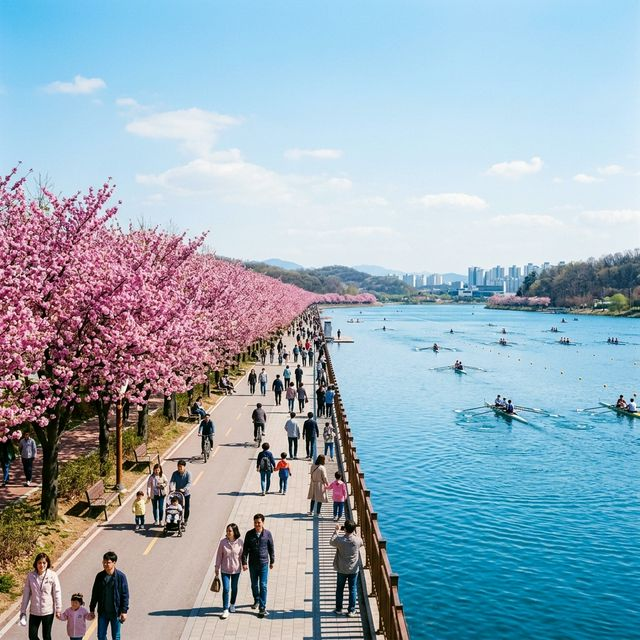
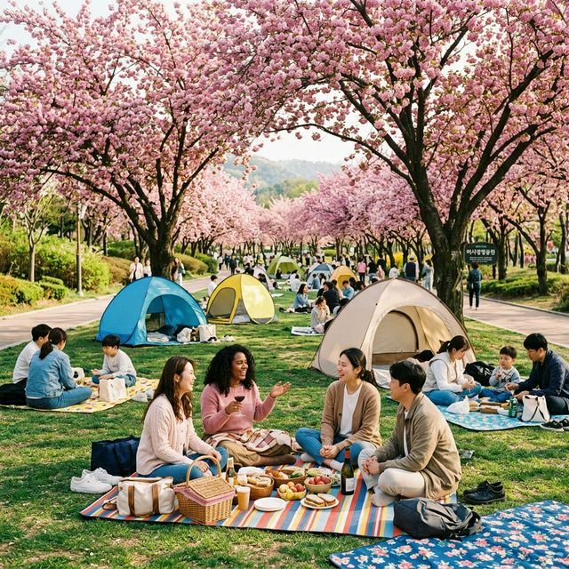
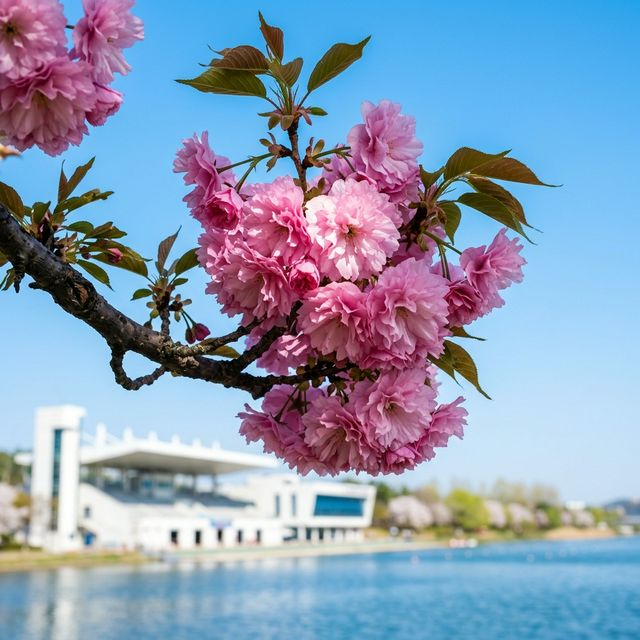

수도권 겹벚꽃 끝판왕! 하남 미사경정공원 완벽 가이드 — 배달존 및 명당 꿀팁
🧺 피크닉 성지: 미사경정공원은 넓고 탁 트인 잔디밭과 함께 수백 그루의 겹벚꽃이 조정 카누 경기장을 따라 장관을 이루는 수도권 최고의
나들이 장소입니다.
📍 배달 Zone: 공원 전체에서 배달 음식 수령이 가능하여 '꽃크닉(꽃+피크닉)'을 즐기기에 더할 나위 없이 좋은 환경을 갖추고 있습니다.
✅ 실시간 정보: 2026년 4월 12일 기준, 이제 막 꽃몽우리가 핑크빛으로 물들기 시작했으며, 다음 주 주말(4월 18~19일)부터 본격적인 절정이 예상됩니다.
서울 근교에서 겹벚꽃을 가장 여유롭고 화려하게 즐길 수 있는 곳을 꼽으라면 단연 하남 미사경정공원입니다. 과거 미사리 조정경기장으로 불리던
이곳은 4월 말이면 호수(조정 경기장)를 따라 끝없이 이어진 분홍색 벚꽃 터널이 압권인 곳인데요. 왕벚꽃처럼 금방 지지 않고 오래도록 자리를 지켜주는 겹벚꽃 덕분에 가족 나들이객과 연인들의 데이트
코스로 독보적인 사랑을 받고 있습니다. 오늘은 성공적인 '미사리 꽃크닉'을 위해 주차부터 배달 음식 수령법까지 모든 꿀팁을 대방출합니다.

파란 호수물과 선명한 핑크빛 겹벚꽃이 조화를 이루는 미사경정공원의 봄날. (AI 제작 이미지)
1. 미사경정공원 겹벚꽃 명당은 어디?
공원이 워낙 넓기 때문에 무작정 걷기보다는 핵심 포인트를 공략하는 것이 중요합니다. 겹벚꽃 나무들이 가장 밀집되어 있고 예쁜 구간은 조정카누경기장 정면(관람석 쪽)이 아닌, 건너편 산책로
구간입니다. 이곳은 자전거 도로와 도보 산책로가 나란히 나 있고, 나무 아래 잔디밭이 넓게 펼쳐져 있어 돗자리를 펴고 쉬기에 최적입니다. 특히 후문 주차장(미사역
방면)에서 진입할 때 이 명당 구역으로 가장 빠르게 이동할 수 있습니다.
2. 배달 음식 수령 및 피크닉 전략
미사경정공원의 가장 큰 장점 중 하나는 배달 음식이 자유롭다는 점입니다. 배달 앱 주소를 '미사경정공원 OO주차장' 혹은 '관리동 앞'으로
설정하면 정문 앞 배달존이나 특정 합의된 구역에서 음식을 받을 수 있습니다. 떡볶이, 치킨, 피자 등 다양한 메뉴를 벚꽃 아래에서 즐기는 호사는 그야말로 봄날의 선물입니다.
🥪 미사리 꽃크닉 준비물 체크리스트
1
피크닉 매트 & 캠핑 의자: 나무 아래 그늘이 많지만 일찍 가지 않으면 자리를 잡기 어려우니 챙겨오시는 것이 좋습니다.
2
유모차/자전거/킥보드: 평지가 잘 조성되어 있어 아이들이나 반려동물과 함께 오기 매우 좋습니다.
3
휴대용 선풍기 & 양산: 오후에는 햇살이 꽤 뜨거울 수 있으므로 자외선 차단 대책이 필요합니다.

겹벚꽃 그늘 아래서 여유로운 주말 오후를 즐기는 나들이객들. (AI 제작 이미지)
3. 2026년 주차 및 교통비 안내
미사경정공원은 주차 공간이 넉넉한 편이지만, 겹벚꽃 시즌 주말에는 오후 1~2시경이면 이미 '만차' 사태가 벌어집니다. 가급적 오전 11시 전에는 입장하시길 추천합니다.
| 구분 |
요금 및 정보 |
꿀팁 |
| 주차 요금 |
승용차 기준 4,000원 (대형 10,000원) |
다자녀/경차 50% 할인 (증빙 필수) |
| 이용 시간 |
05:00 ~ 20:00 (도보/자전거) |
차량 입장은 06:00부터 가능 |
| 자전거 대여 |
1인승 4,000원 / 2인용 8,000원 (1시간) |
다인용 자전거로 공원 한 바퀴 강추 |

하늘을 찌를 듯 풍성하게 피어난 미사리 겹벚꽃의 화려한 자태. (AI 제작 이미지)
4. 함께 들르기 좋은 서북권 명소
하남까지 왔다면 공원만 보고 가기엔 아쉽죠. 당일치기 코스로 추천하는 주변 명소입니다.
- 스타필드 하남: 공원에서 차로 10분 거리입니다. 시원한 실내 쇼핑과 맛집 투어로 피로를 풀기 좋습니다.
- 하남 나무고아원 (유아숲체험원): 아이와 함께라면 강추! 자연 속 놀이터가 아주 잘 되어 있습니다.
- 당정뜰 (메타세쿼이아길): 경정공원 바로 옆으로 이어지는 한적한 산책로로 신록의 기운을 만끽할 수 있습니다.
💡 촬영 시 유의사항: 나무 아래 텐트 설치가 가능한 구역과 불가능한 구역(잔디 보호 구역 등)이 엄격히 나뉘어 있습니다. 현장 안내 요원의 지시를 잘 따라주세요.
5. 결론: 가장 편리하고 화려한 수도권 겹벚꽃 엔딩
멀리 경주나 서산까지 갈 시간이 없다면, 하남 미사경정공원은 가장 훌륭한 대안이자 최고의 선택지가 될 것입니다. 2026년 4월, 쏟아지는 봄
햇살 아래 분홍색 겹벚꽃 나무 아래서 사랑하는 사람들과 함께 먹는 맛있는 음식과 웃음소리는 그 어떤 여행지보다 소중한 기억으로 남을 것입니다. 벚꽃이 지기 전, 이번 4월 셋째 주말에는 꼭 하남으로
떠나보시길 바랍니다.
본 콘텐츠는 2026년 4월 12일 실시간 기상 관측 자료를 바탕으로 제작되었습니다. 겹벚꽃은 개화 기간이 상대적으로 길지만 강한 비바람에 취약할 수 있으니 방문 전 일기예보를 확인해 주세요. 아름다운
공원을 위해 쓰레기는 반드시 회수하거나 지정된 장소에 버려주시기 바랍니다.
#하남미사경정공원겹벚꽃
#미사경정공원주차비
#미사리벚꽃피크닉
#수도권겹벚꽃명소
#미사리맛집배달
#하남가볼만한곳
#4월꽃구경추천
#인생사진출사지
#아이와가볼만한곳
#강동송파나들이